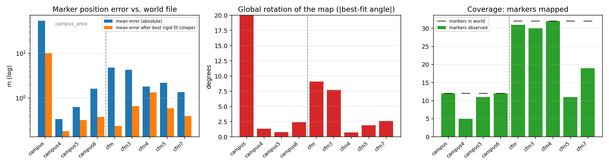
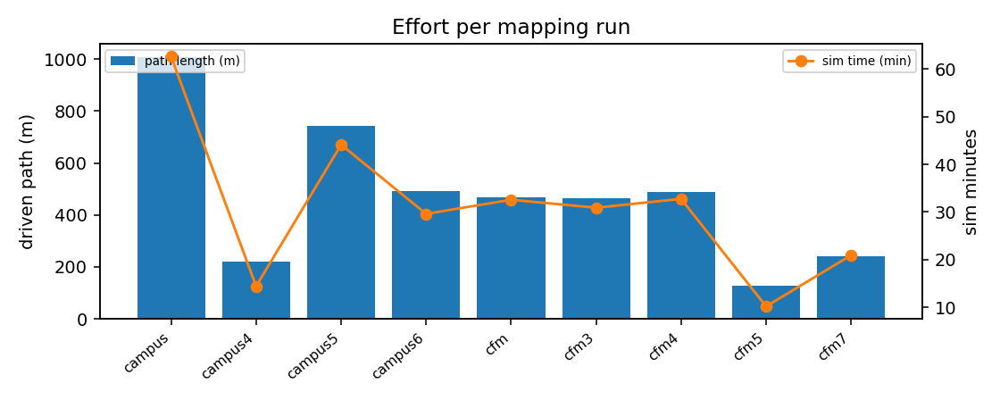
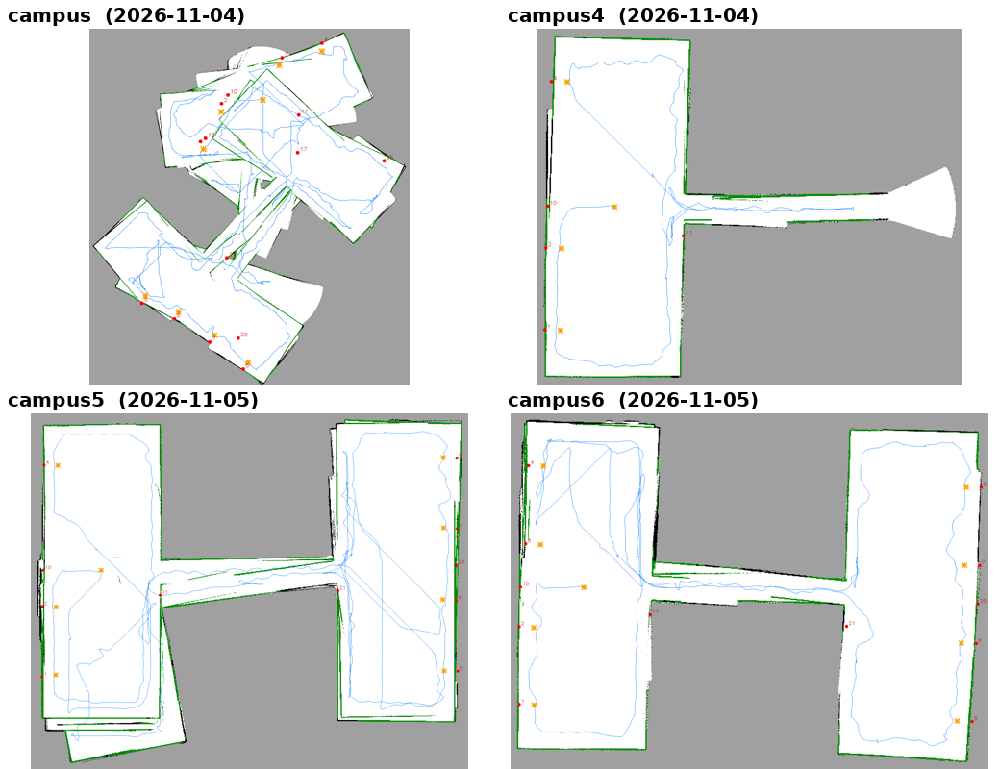
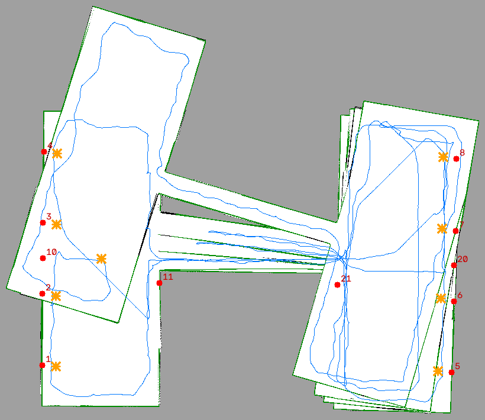
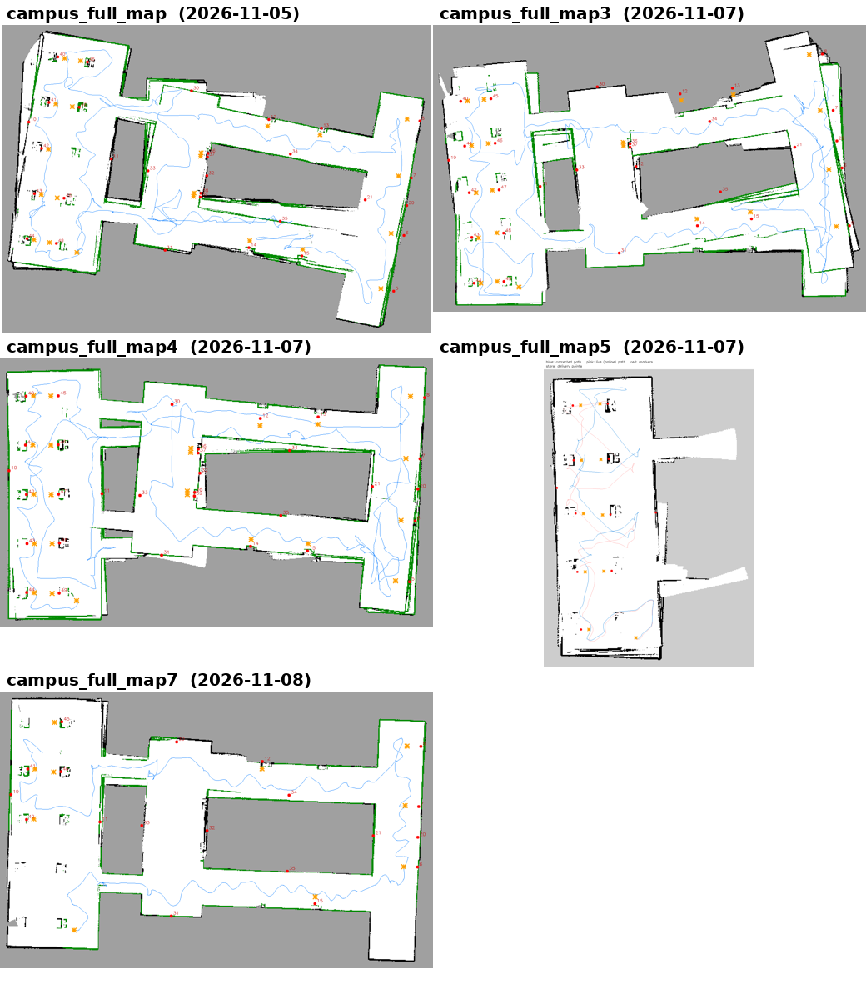
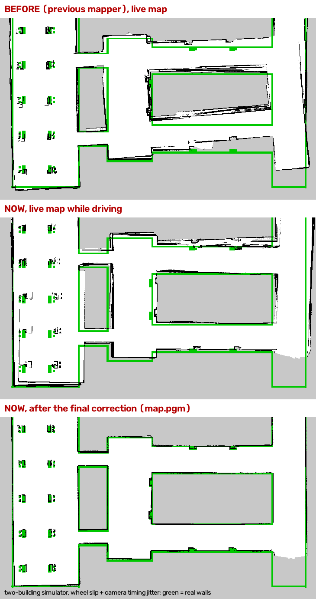
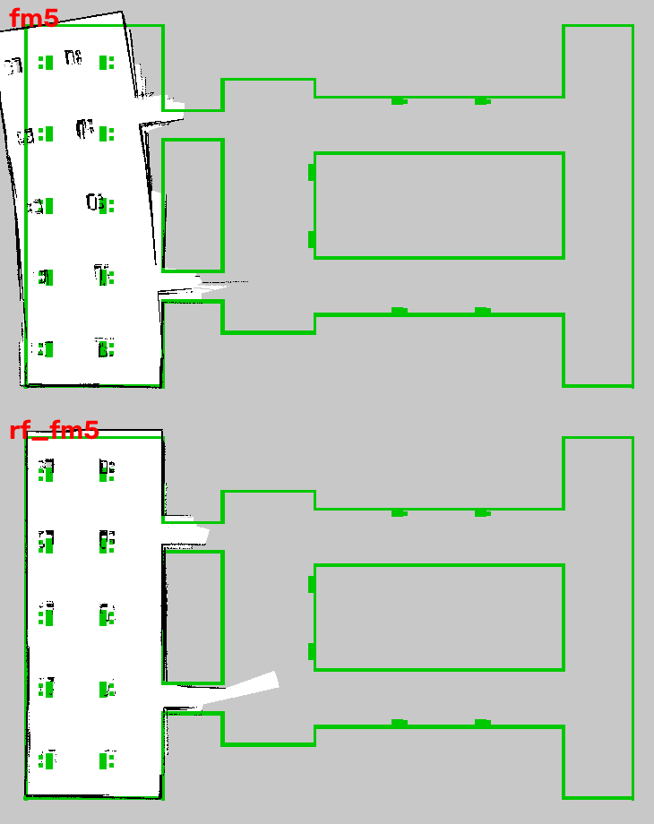
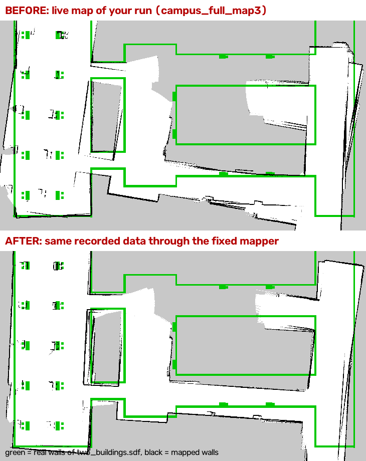
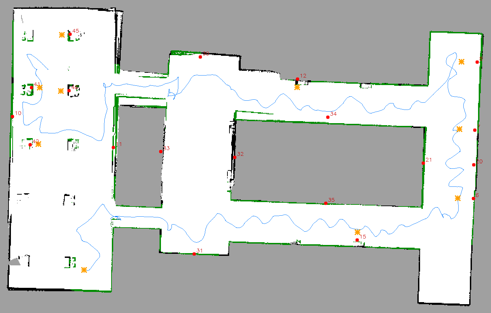

Between 4 and 8 November 2026 the ArUco SLAM mapper was run 13 times (plus one empty folder,
campus_full_map2), first in the two-room campus_area world and then in the larger
two_buildings campus. Each run left a complete map folder in ~/ros2_jazzy_ws/maps. Because the
mapper starts at the Gazebo spawn pose, map coordinates equal world coordinates, so every map can be scored objectively
against the marker positions in the world files (aruco_markers.yaml, aruco_markers_two_buildings.yaml).
This report measures each map the same way and explains which change in the software caused each step.
aruco_landmarks.yaml and its true pose
(markers added by hand with 0 observations are left out).trajectory.csv. Script:
reports/src/scripts/metrics.py and align.py.| Map | Created | World | Markers | Abs. err (m) | Shape err (m) | Rot. (°) | Path (m) | Sim min |
|---|---|---|---|---|---|---|---|---|
| campus | 11-04 20:54 | campus_area | 12/12 | 53.41 | 10.17 | 100.4 | 1007 | 62.5 |
| campus2 | 11-04 22:44 | campus_area | 2/12 | 1.03 | – | – | 0 | 0.2 |
| campus3 | 11-04 22:52 | campus_area | 2/12 | 0.90 | – | – | 0 | 0.2 |
| campus4 | 11-04 23:13 | campus_area | 5/12 | 0.34 | 0.18 | 1.3 | 221 | 14.5 |
| campus5 | 11-05 00:01 | campus_area | 11/12 | 0.63 | 0.32 | 0.8 | 742 | 44.1 |
| campus6 | 11-05 00:38 | campus_area | 12/12 | 1.61 | 0.37 | 2.4 | 491 | 29.6 |
| campus_full_map | 11-05 04:08 | two_buildings | 31/32 | 4.81 | 0.24 | 9.1 | 467 | 32.6 |
| campus_full_map1 | 11-07 18:41 | two_buildings | 0/32 | – | – | – | 0 | 0.0 |
| campus_full_map3 | 11-07 19:44 | two_buildings | 30/32 | 4.25 | 0.66 | 7.7 | 464 | 30.9 |
| campus_full_map4 | 11-07 21:18 | two_buildings | 32/32 | 1.81 | 1.34 | 0.7 | 489 | 32.8 |
| campus_full_map5 | 11-07 22:02 | two_buildings | 11/32 | 2.20 | 0.59 | 1.9 | 129 | 10.2 |
| campus_full_map6 | 11-07 23:39 | two_buildings | 0/32 | – | – | – | 1 | 1.0 |
| campus_full_map7 | 11-08 00:16 | two_buildings | 19/32 | 1.35 | 0.39 | 2.6 | 242 | 20.9 |



campus. First full autonomous run. All 12 markers found, but heading from slipping wheels in in-place turns made each pass of a room come out rotated: overlapping copies of both rooms.
campus2. Aborted after 14 s (test of the new scan recording, scans.npz).
campus3. Aborted after 14 s (same test).
campus4. Partial run (left room + corridor) after switching heading to the IMU gyro: first clean, straight geometry.
campus5. Both rooms, 11/12 markers. Walls in the right room are doubled (small residual heading error). Live and post-corrected versions saved.
campus6. 12/12 markers, single clean walls in both rooms. Reference map for campus_area.

campus map – each room is drawn several times at different angles. This test led to using the gyro for heading and to the slip correction tools.use_imu), slower
turns while mapping (0.45 rad/s), and recording raw scans for offline correction. Result: from a shattered map
(53 m mean error) to campus6 with all markers and 0.37 m shape error.
campus_full_map. First map of the larger two_buildings world (32 markers, tables, ring corridor). Shape good, but the whole map is rotated ≈9°.
campus_full_map1. Aborted at start (no trajectory).
campus_full_map3. Rotated ≈8° with ghost walls in building B: marker re-sightings were still allowed to turn the heading.
campus_full_map4. After the "spin fix" (gyro trusted, markers correct position only): rotation gone (0.7°), all 32 markers, but local distortions remain (1.3 m after rigid fit).
campus_full_map5. Building A only, used to develop the post-run pose-graph correction (online vs corrected path: mean 1.78 m apart).
campus_full_map6. Aborted after 61 s.
campus_full_map7. Final map: single sharp walls everywhere, 19 markers observed + 10 table markers added afterwards, shortest run (242 m). Used by the web app.



gyro_noise 0.0003) so a marker
seen again corrects the position but can no longer rotate the map; (2) marker bearings are down-weighted while turning and
ignored above 0.5 rad/s; (3) sensor time stamps are synchronised with the motion (sync_sensors) for runs faster than real
time; (4) exploration targets walls the camera has not yet seen from close range, so fewer passes are needed. The rotation fell
from 9° to under 3°, and the final run drove 242 m instead of ≈470–490 m.
| campus (first) | campus6 (best campus_area) | campus_full_map (first two_buildings) | campus_full_map7 (final) | |
|---|---|---|---|---|
| Markers observed | 12/12 | 12/12 | 31/32 | 19/32 (+10 added) |
| Mean absolute error | 53.4 m | 1.61 m | 4.81 m | 1.35 m |
| Max absolute error | 114.1 m | 2.90 m | 9.68 m | 1.89 m |
| Shape error (rigid fit) | 10.2 m | 0.37 m | 0.24 m | 0.39 m |
| Global rotation | 100° | 2.4° | 9.1° | 2.6° |
| Walls | multiple rotated copies | single, straight | single, slightly doubled in B | single, sharp |
| Path / sim time | 1007 m / 63 min | 491 m / 30 min | 467 m / 33 min | 242 m / 21 min |
| Usable for delivery | no | yes | yes, rotated | yes – in production |
aruco_landmarks_before_tables.yaml holds the observed-only version). Markers 5,
44 and 49 were never detected and could be added in a short teleoperated top-up run.optimize_map on map7 and compare
the corrected version with the same metrics; repeat the protocol on the real robot with a tape-measured marker survey as ground
truth.